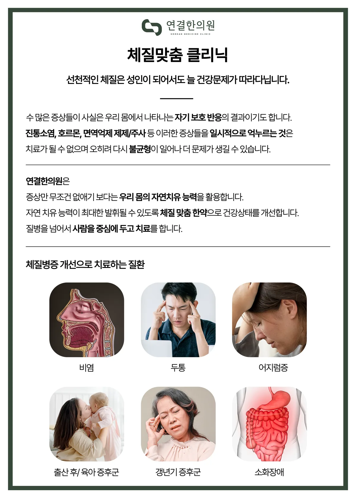

연결한의원은 증상만 무조건 없애기보다 우리 몸의 자연치유 능력을 활용합니다. 자연치유 능력이 최대한 발휘될 수 있도록 체질 맞춤 한약으로 건강 상태를 개선하며, 질병을 넘어 사람을 중심에 두고 치료합니다.
수많은 증상은 사실 우리 몸에서 나타나는 자기 보호 반응의 결과이기도 합니다. 진통소염제·호르몬·면역억제제 등으로 증상을 일시적으로 억누르는 것은 치료가 될 수 없으며, 오히려 다시 불균형이 일어나 더 문제가 생길 수 있습니다. 환절기마다 비염·코막힘이 반복되는 분이라면 현재 상태와 기존 검사 결과를 확인한 뒤 적용 가능 여부를 상담할 수 있습니다.
체질개선 클리닉, 어떤 분께 필요할까요?
- 환절기마다 비염·코막힘이 반복되는 분
- 검사에서 이상이 없는데 두통·어지럼이 계속되는 분
- 만성 소화장애, 자주 체하고 더부룩한 분
- 출산 후·육아 중 피로와 관절통이 이어지는 분
- 갱년기 증후군(안면홍조·불면·우울감)으로 힘드신 분
체질개선 클리닉, 어떻게 진행되나요?
체질 진단
문진·맥진·복진과 추위·열감, 소화·수면·대변, 회복 속도를 종합해 체질을 파악합니다.
원인 구분
증상이 어떤 불균형에서 비롯됐는지, 다른 검사가 먼저 필요한지 구분합니다.
체질 맞춤 한약
체질과 현재 상태에 맞춰 조제하며 15일마다 재상담 후 다음 처방을 결정합니다.
생활 관리
체질에 맞는 식사·수면·운동 습관을 안내해 개선된 상태를 유지하도록 돕습니다.
체질 개선은 짧게는 1~2개월, 길게는 계절이 바뀌는 기간 동안 관리가 필요할 수 있어 개인차가 큽니다.
체질명 하나로 치료를 자동 결정하지 않으며, 한약 복용 중 반응을 확인해 처방을 유지·변경·중단합니다.
원내 안내 포스터

체질개선 클리닉, 무엇이 궁금하신가요?
체질 검사는 어떻게 하나요?
설문과 문진, 맥진·복진, 체형과 생활 습관 확인을 종합해 판단합니다. 체질은 고정된 꼬리표가 아니라 몸의 반응을 이해하는 정보로 활용합니다.
양약과 함께 복용해도 되나요?
대부분 병행이 가능하지만 복용 중인 약을 반드시 알려주셔야 합니다. 임의로 기존 약을 중단하지 마시고 담당 의료진과 조율하는 것을 권합니다.
체질개선 한약은 얼마나 먹어야 하나요?
증상의 기간과 정도, 회복 속도에 따라 다릅니다. 15일 단위로 재상담하며 처음 정한 목표에 가까워지고 있는지 확인해 결정합니다.
관련 질환 정보
지점 안내
연결한의원 청주오창
충북 청주시 청원구 오창읍 2산단로 132, 301·302호 (3층)
대표전화 043-715-3688 · 네이버지도 길찾기 →
연결한의원은 증상만 보지 않습니다.
증상 뒤에 숨은 원인을, 오늘의 몸과 회복된 내일을 잇는 것 — 저희가 ‘연결’이라는 이름을 쓰는 이유입니다.
체질개선 클리닉로 고민이시라면, 혼자 판단하기보다 정확한 진단부터 함께 시작해 보세요.